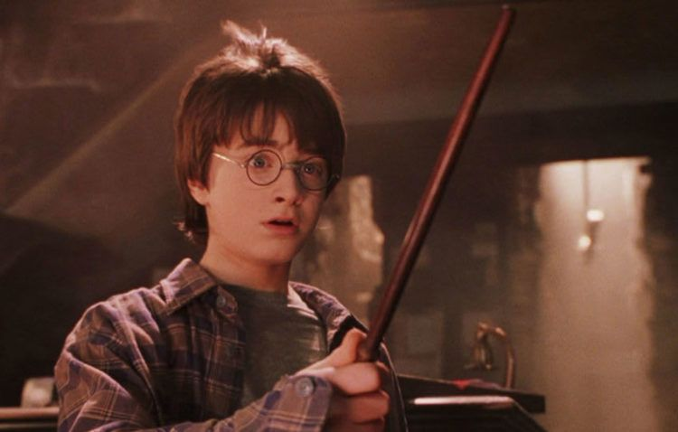

É comum ouvirmos as pessoas falarem que os filmes inspirados em livros não chegam aos pés das obras escritas, não é mesmo?
Porém, muitos longas fizeram muito sucesso entre o público e são aclamados até hoje, independentemente da época de lançamento.
Além disso, existem filmes que fazem jus à história contada nos livros, o que torna a experiência ainda mais legal!
Reuni dez livros que são meus queridinhos e que viraram filmes de sucesso para você ler, assistir ou fazer os dois.
Confira abaixo!
A Saga Crepusculo
Conhecida pela sequência de cinco filmes, a saga também conta
com sete livros escritos por Stephenie Meyer que deram origem a história intrigante e às adaptações para o cinema.
Sucesso de bilheteria entre 2008 e 2012, os filmes baseados nos livros de Stephenie renderam mais de 3,4 bilhões de dólares em todo o mundo, tornando-se um dos filmes vampirescos mais assistidos até hoje.
Saiba mais sobre o filme:
A Cabana
Publicado pelo autor William P. Young em 2007, o livro A Cabana rapidamente se tornou um best-seller - já são ao menos 18 milhões de exemplares vendidos, até a conclusão deste texto.
Não é difícil entender o porquê: sua história edificante e serena,
apoiada em preceitos religiosos, serve como auto-ajuda
em momentos de expiação, de dor e de culpa.
Diante de tais características, e tamanho sucesso,
chega a ser surpreendente que sua versão cinematográfica tenha levado uma década para enfim acontecer, até mesmo pela simplicidade de sua história e dos recursos necessários para que seja apresentada.
Saiba mais sobre o filme:
O Poderoso Chefão
A saga da família Corleone surgiu primeiro no livro “The Godfather”, de Mario Puzo, lançado em 1969.
A história de máfia ítalo-americana chegou aos cinemas pelas mãos de Francis Ford Coppola, com a colaboração de Puzo para o roteiro.
Além de tratar dos crimes comandados por Don Vito Corleone, a trilogia também fala das relações familiares e da passagem de poder de pai para filho.
O Poderoso Chefão, o primeiro filme da série, foi lançado em 1972 e apresenta o patriarca interpretado por Marlon Brando.
Don Vito está se afastando dos negócios, enquanto que um de seus filhos, Michael (Al Pacino), se prepara para assumir o comando.
Saiba mais sobre o filme:
Cinquenta Tons De Cinza
Foram anos de desenvolvimento até que, em 2015,
o primeiro filme de 50 Tons de Cinza foi lançado.
Apesar das reações controversas da crítica e do público,
50 Tons de Cinza foi um grande sucesso de bilheteria e, rapidamente,
virou uma trilogia, que já teve sua última parte no cinema em 2018.
A estudante de literatura Anastasia Steele, de 21 anos, entrevista o jovem bilionário Christian Grey, como um favor a sua colega de quarto Kate Kavanagh. Ela vê nele um homem atraente e brilhante, e ele fica igualmente fascinado por ela.
Saiba mais sobre o filme:
Jurassic Park
Sim, Jurassic Park é um filme adaptado de um livro, você sabia?
A obra, uma distopia de Michael Crichton, foi publicada em novembro de 1990
e exibida nas salas de cinema em 1993, pouquíssimo tempo depois.
O livro tem como pano de fundo a “teoria do caos” e as consequências quando um parque povoado por dinossauros, recriados a partir da engenharia genética, entra em colapso.
O filme foi dirigido por Steven Spielberg.
Saiba mais sobre o filme:

Harry Potter
A saga de livros Harry Potter, da autora britânica J. K. Rowling, ficou extremamente famosa em todo o mundo desde o seu lançamento, em 1997. O romance de fantasia conta a história do jovem órfão Harry Potter, que descobre, aos 11 ser filho de grandes bruxos.
A partir disso, o garoto, que até então vivia com os tios cruéis, é convidado para estudar na prestigiada Escola de Magia e Bruxaria de Hogwarts.
No local ele vive grandes aventuras ao lado de seus memelhores amigos,Hermione Granger e Rony Weasley.
Saiba mais sobre o filme:
A Culpa é das Estrelas
Sexto livro escrito por John Green, publicado em 2012
e lançado no cinema dois anos depois.
O autor, que já tinha alcançado algum prestígio com outras publicações, chega ao ápice com uma história arrasadora,
surpreendente e encantadora.
Saiba mais sobre o filme:
Divergente
Inspirado em uma trilogia literária escrita por Veronica Roth, Divergente chegou aos cinemas em 2014.
Originalmente, a franquia cinematográfica deveria ter quatro filmes, de modo que o último livro da série fosse dividido em duas partes.
No entanto, devido a má bilheteria da terceira produção
e outros problemas de bastidores, o quarto longa nunca saiu do papel, fazendo com que a série não fosse de fato encerrada nas telonas.
Saiba mais sobre o filme:
Carandiru
Lançado em 1999, o livro Estação Carandiru é escrito pelo Dr. Drauzio Varella.
O filme Carandiru em 2003 leva para as telas o massacre que aconteceu nesse presídio paulista em 1992.
Carandiru é uma produção de ponta dentro do cinema brasileiro. A direção ficou nas mãos do renomado Hector Babenco e o elenco reúne atores e atrizes de primeira linha, como Wagner Moura, Lázaro Ramos, Rodrigo Santoro e muitos outros.
Saiba mais sobre o filme:
Senhor dos Anéis
A trilogia O Senhor dos Anéis ganhou o coração do público de diferentes gerações. A saga de livros de J.R.R. Tolkien ganhou as telonas e ainda hoje é considerada uma das franquias de maior sucesso de bilheteria.
Os filmes, de produção e direção de Peter Jackson (roteirista, cineasta e produtor neozelandês) receberam ao todo 30 indicações ao Oscar, conquistando 17 estatuetas, e são ainda hoje considerados um dos maiores projetos cinematográficos da história.
Saiba mais sobre o filme: